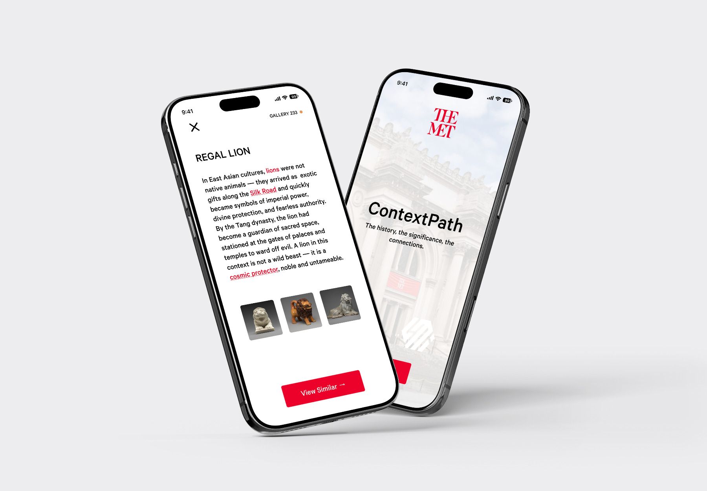
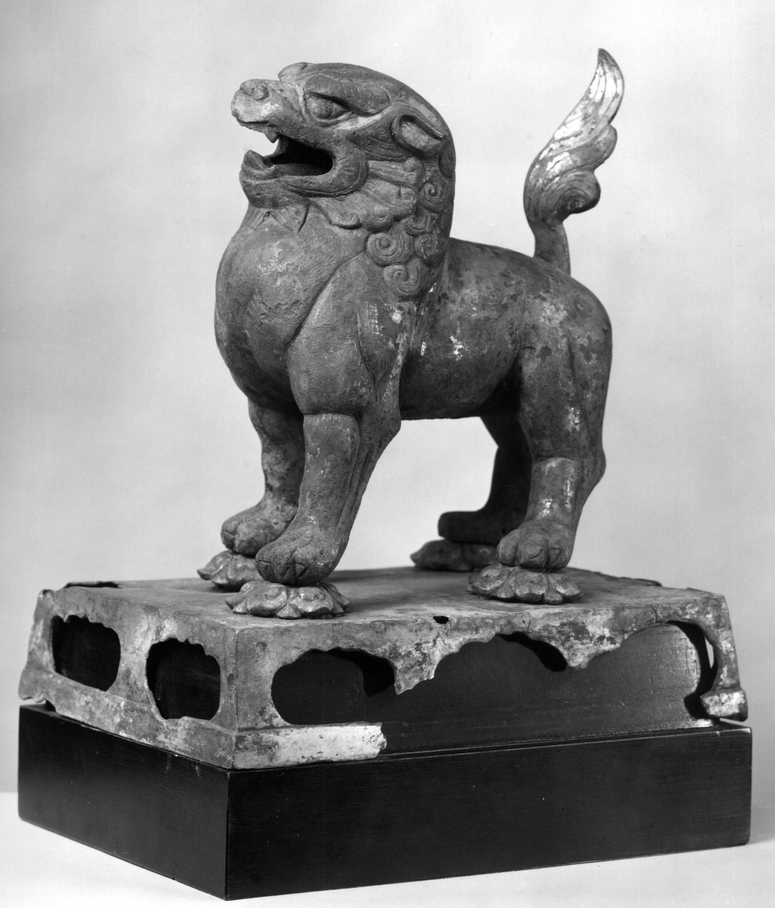

ContextPath
I was invited to a one-day hackathon held by Anthropic and The Metropolitan Museum of Art, at the Met, coinciding with the release of Claude Opus 4.8. The Asian Art collection holds some of the oldest artifacts in the building, yet much of Western society lacks the cultural frame of reference to appreciate them the way they might the Greek or Roman galleries. Using Claude, I built an experience that delivers that depth of context to visitors without pulling them away from the piece in front of them, designed in Figma and brought to life with Claude Code for a live demo.
Using Claude integration to provide a depth of context to an artifact without losing face-to-face experience with the piece.
The Asian Arts collection at the museum dates back to 3200–2000 BCE with ritual objects (bi discs) from the Neolithic Liangzhu culture – needless to say, that is a very, very long time ago. Such an incredibly rich and long history exists in all of the artifacts in the collection, yet much of Western society does not understand the context or the history behind the pieces like they might the Greek or Roman collection. So, we decided to bridge that gap by providing that depth of context through Claude and Anthropic's services.
The app also pulls from the Met's database of other works that have similar iconography or time in history to encourage engagement with other parts of the museum and highlight that we are, and have always been, all connected despite our geographical place in the world. We see opportunity for a connection to contemporary works as well.
How might we encourage museum visitors to engage deeper with the Met's Asian Art collection?
The Metropolitan Museum of Art in New York City's Asian Art collection contains over 34,000 digitized works of art from 4000 BCE to the present day. However, some of the work contains symbols, ideas, or techniques that are unfamiliar to contemporary or non-expert audiences, from calligraphic writing to fantastic beasts.
So, the Met invited me to explore ways AI can invite audiences to further engage with this collection, on-site or online. They described this as either creating something in a dialog with a single, detail-rich work, or being inspired by or using data from large swaths of the collection.
The missing piece: context.
I interviewed four willing participants (two already exploring the Asian Art collection, and two elsewhere in the museum), asking what drew them in, or why they hadn't visited the collection yet, through open-ended, non-leading conversation.
Across those conversations the same gap surfaced: people were genuinely curious, but without a frame of reference for the symbolism and history, the works felt harder to approach than the Greek or Roman galleries next door. The interest was there — the context wasn't.

Scan the piece
The visitor scans the artifact, and Claude pulls from the museum's database to identify exactly what they're looking at.
Unpack the label
They dig into the key words on its label, in their historical context, to build real understanding of the piece itself.
Follow the thread
This can continue as long as it stays interesting, surfacing related works elsewhere in the museum along the way.
An accessory to face-to-face experience, not a replacement.
Say a visitor with ContextPath is standing in front of the Standing Lion from the Tang Dynasty, and wants to understand it in the context of when it was made.
Crucially, visitors cannot view the piece through their phone, and cannot revisit information for past pieces unless they're standing in front of them. This way, the experience never replaces the significance of face-to-face connection with artifacts in the museum.
AI in art and museum spaces often draws public pushback. So while it's no secret that the scan and database are powered by Claude, that stays discreet (a quiet path into deeper knowledge, for the greater good, far less likely to invite controversy).
Thank you to Team Anthropic and the Met.
I'd like to close by extending my heartfelt thanks to the two remarkable institutions that made this project possible.
To the team at Anthropic — thank you for building tools that genuinely expand what's creatively and intellectually possible, and for bringing them into spaces like this one. Beyond the technology, the conversations I got to have with people from the Anthropic team on the day were so thoughtful, generous, and genuinely inspiring. Your support throughout the hackathon, and your belief that AI can be a meaningful collaborator in the arts, made all the difference.
To The Metropolitan Museum of Art — thank you for opening your doors, your collection, and your curiosity to us. There is something quietly profound about being invited to think about the future inside one of the world's great temples to human creativity.